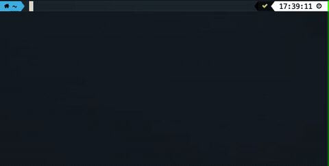

Getting Started¶
Requirements¶
- Operating System: MacOS, Windows, or Linux
- (optional) Python 3.6+
- (optional) Docker
- (optional) Vagrant
- (optional) OpenSSH
The build-magic project is cross-platform and will run on all recent OS versions. If build-magic isn't installed from a binary package, Python 3.6 or greater is required.
To get the most out of build-magic, it is recommended to have OpenSSH, Docker, and Vagrant installed.
Installation¶
MacOS¶
Build-magic can be installed with Homebrew using the following commands:
> brew tap cmmorrow/build-magic
> brew install build-magic
Windows¶
A Windows installer is available for build-magic and can be downloaded from the links below:
| Installer | Version |
|---|---|
| build-magic-0.4.0_amd64_installer.exe | 0.4.0 |
Linux¶
The easiest way to install build-magic for Linux is by installing from a package.
Debian/Ubuntu/Mint¶
Minimum compatible versions are Debian 10 (buster), Ubuntu 20.04 (focal fossa), or Mint Linux 19 (Tara).
Instructions:
- Download the build-magic package from the link above using a web browser or from the command line using
wgetorcurl. - (Optional) Download the SHA256 hash file to compare with with the hash of the downloaded package.
- (Optional) If you downloaded the hash file, you can view the hash with
cat build-magic-(version)_amd64.hash, where(version)matches the version in the downloaded hash file. Next, compare the SHA256 hash of the downloaded package withshasum -a 256 build-magic-(version)_amd64.deb. If the hash matches the content of the downloaded hash file, the package hasn't been altered since it was built. - Install the downloaded package with
sudo dpkg --install build-magic-(version)_amd64.deb, where(version)matches the version in the downloaded package.
Fedora/CentOS/Red Hat¶
Minimum compatible versions are CentOS/RHEL 7.9 and Fedora 33.
Instructions:
- Download the build-magic package from the link above using a web browser or from the command line using
wgetorcurl. - (Optional) Download the SHA256 hash file to compare with with the hash of the downloaded package.
- (Optional) If you downloaded the hash file, you can view the hash with
cat build-magic-(version)-0.el7.9.x86_64.hash, where(version)matches the version in the downloaded hash file. Next, compare the SHA256 hash of the downloaded package withsha256sum build-magic-(version).el7.9.x86_64.rpm. If the hash matches the content of the downloaded hash file, the package hasn't been altered since it was built. - Install the downloaded package with
sudo yum install build-magic-(version).el7.9.x86_64.rpm.deb, where(version)matches the version in the downloaded package.
Install via pipx¶
If you have Python3 installed, the recommended way to install build-magic is into an isolated environment via pipx.
> pipx install build-magic
Installing from PyPI¶
You can install build-magic using pip with the following command:
> pip install build-magic
Installing from Source¶
The build-magic project is written in Python. First, create a new virtual environment for development with:
> python3 -m venv /path/to/new/virtual/environment
Alternatively, you can create a virtual environment with conda or virtualenv. Be sure to activate your virtual environment with:
> source /path/to/new/virtual/environment/bin/activate
Next, navigate to the directory where you want to install build-magic and clone the repository using HTTPS with:
> git clone https://github.com/cmmorrow/build-magic.git
Or using SSH with:
> git clone git@github.com:cmmorrow/build-magic.git
Or using the GitHub CLI with:
> gh repo clone cmmorrow/build-magic
Getting The Most Out of build-magic With Optional Command Runners¶
In addition to running commands on your machine, build-magic can also run commands in a virtual machine, a Docker container, or on a remote machine.
Using Docker¶
To use build-magic to run commands in a container, you will need to have Docker installed. Instructions on how to install Docker can be found here.
Using A Virtual Machine¶
Build-magic can execute commands in a virtual machine via Vagrant. Vagrant is a command-line tool for controlling virtual machines. Instructions on how to install Vagrant can be found here.
Using a Remote Machine¶
Build-magic can execute commands on a remote machine via SSH. To allow remote command execution, SSH client needs to be installed on the local machine and SSH server needs to be installed and running on the remote machine.
If you're using MacOS or Linux, both SSH client and SSH server should be installed. If you are using Windows 10+, SSH client and SSH server are installable features. Instructions for installing SSH on Windows 10 or Windows Server 2019 can be found here.
Currently, build-magic only supports SSH connections via public/private key pairs for password-less login. Password-less login needs to be working before build-magic can make use of remote command execution. You can read more about how to configure public/private key pairs on SSH.com.
Basic Usage¶
You can verify build-magic is install by running the following command from a command prompt:
> build-magic --verbose "echo 'hello world'"
You should see build-magic run and output hello world
